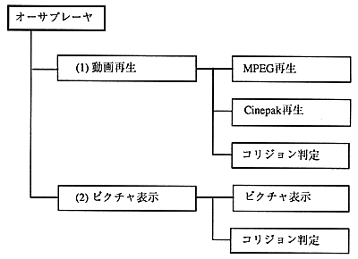

The author converter consists of the following two modules.
Picture display
-Author player (file name: AT_PLAY.ABS)
・ Scenario file (file name: AT_PLAY.ASC)
・ Script file
・ Interleave definition file
・ Video file (MPEG or Cinepak)
・ Picture file (1 still image)
・ Collision file
Caution AT_PLAY.ABS is loaded with the CD-ROM boot module. The scenario file name should be AT_PLAY.ASC.